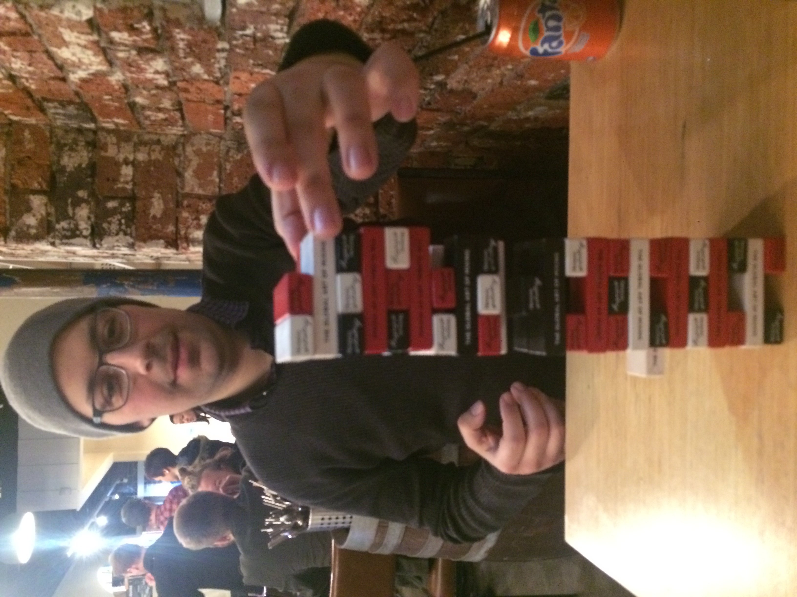

About Me

Hi, I am Peter. I am currently studying Front -End Web Developer.
the past, I worked as a Technology Assistant in a lab. I was required to install, diagnose, repair and replace hardware and software, and communicated the problems with my customers in a simple way they would understand. Since then I found my passion with computing and software and I always have a life long passion for learning. I always strive to achieve individually in every project I do. But I understand with my previous experience was not sufficient enough to make me become a professional software developer. Therefore I decided to study a course that could bring me all the skills are required in this constantly changing industry. During my study, I was not afraid of tacking unknown problems or starting rough new project. I write code, problem solving and working with a team to created a web and provide detailed information for the public to search the places they want to go. The website works very well with testable code and we achieved with A+.
Knowledges in HTML, CSS, Javascript, JQuery and NodeJS, Java, C#, C++ and assemble language